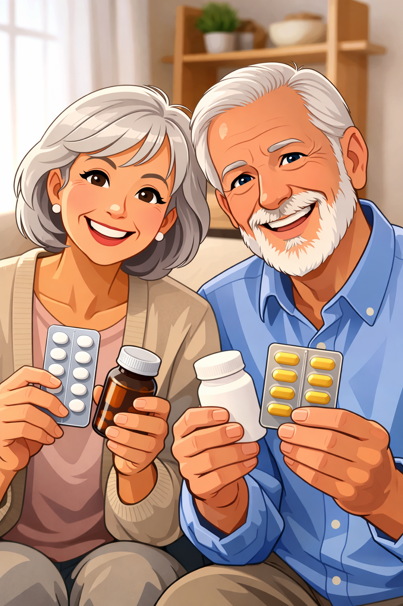

Strategi Penggunaan Aman
Start Low, Go Slow
Mulai pemberian dari dosis terendah, lalu tingkatkan secara bertahap sesuai respon.
Monitoring Rutin
Pantau nilai Kreatinin & LFG, kadar Kalium elektrolit, dan Tekanan darah secara teratur.
Review Obat Berkala
Lakukan evaluasi untuk mencegah interaksi obat berbahaya dan duplikasi terapi.
Edukasi Pasien
Bantu pasien & keluarga mengenali efek samping serta pentingnya mematuhi jadwal kontrol.
Cara Aman Menggunakan ACE Inhibitor
Mulai dari dosis rendah
Obat diberikan sedikit demi sedikit sesuai anjuran dokter.
Pantau kondisi tubuh berkala
Cek Tekanan darah, Fungsi ginjal (lab), & Kadar kalium dalam darah secara rutin.
Periksa obat berskala
Evaluasi rutin seluruh daftar obat yang dikonsumsi.
Edukasi pasien & keluarga
Kenali cara minum benar & tanda efek samping (pusing, batuk kering, detak jantung tak teratur). Segera lapor dokter jika muncul gejala.
Perhatikan Asupan Air
Minum cukup air (6–8 gelas/hari). Air membantu tubuh menyerap obat & mencegah gangguan fungsi ginjal.
Tips Aman untuk Lansia
- Minum obat pada waktu yang sama setiap hari.
- Jangan minum obat bersamaan dengan alkohol atau suplemen tinggi kalium tanpa konsultasi.
- Periksa rutin ke dokter untuk memantau efek obat.
- Catat gejala yang dirasakan untuk dikonsultasikan.

Intervensi
(Yang Bisa Dilakukan Lansia atau Keluarga)
Minum Obat Tepat Waktu
Mengingatkan lansia minum obat tepat waktu sesuai anjuran.
Pantau Tekanan Darah
Membantu memantau tekanan darah di rumah secara rutin.
Cukup Minum Air Putih
Memastikan lansia cukup minum air putih demi menjaga cairan tubuh yang baik.
Perhatikan Kondisi Tubuh
Memperhatikan apakah ada gejala baru atau perubahan kondisi tubuh sekecil apa pun.
Segera Hubungi Dokter
Segera hubungi dokter jika ada gejala seperti pusing berat, batuk persisten, pembengkakan, atau jantung berdebar.